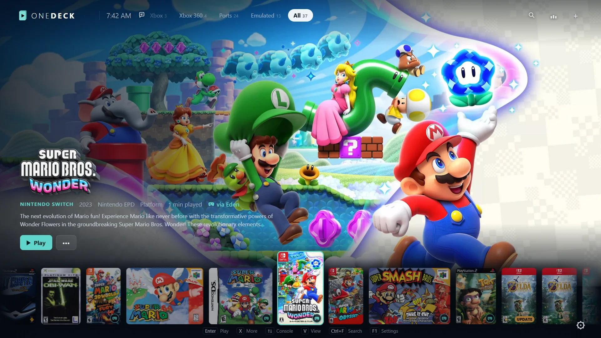
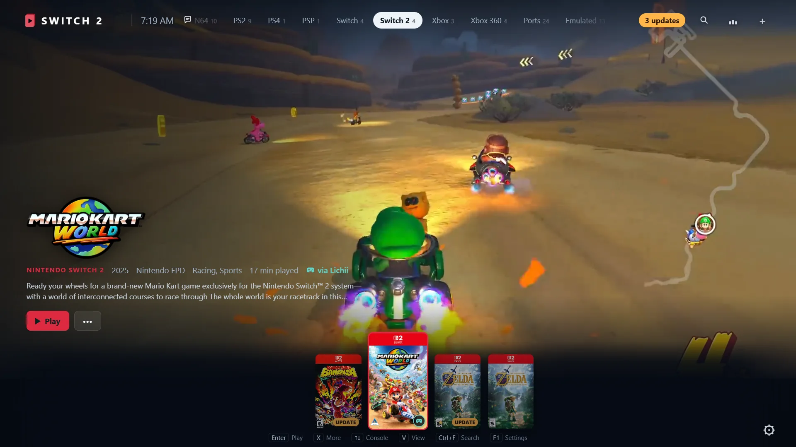
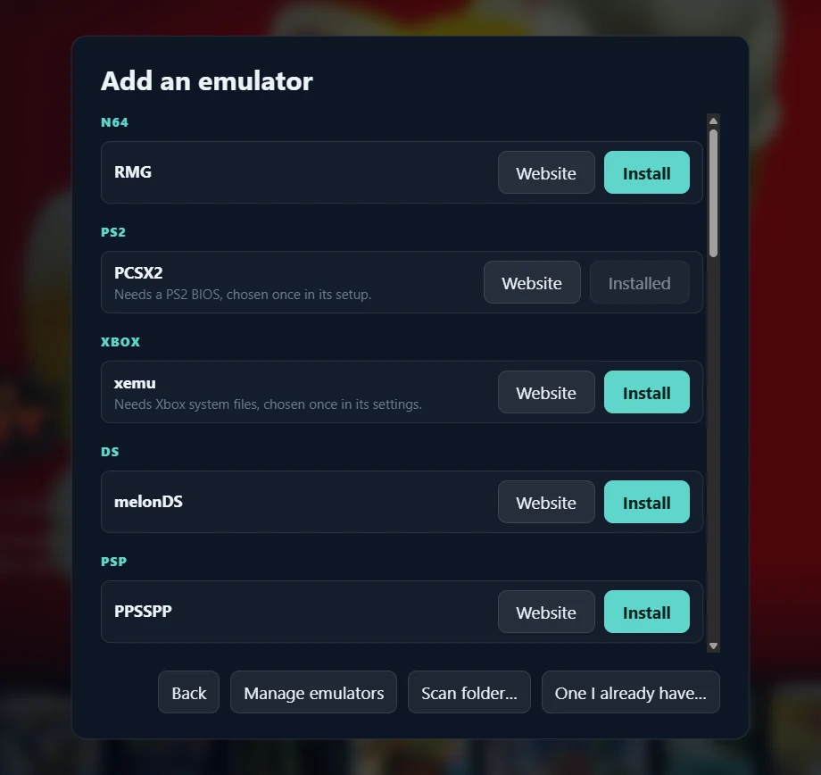
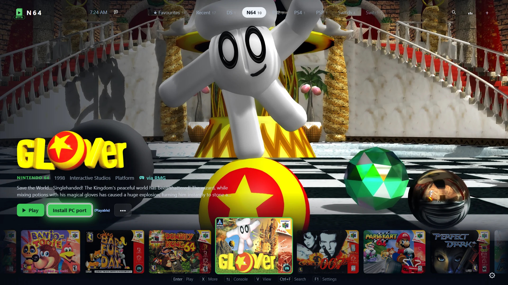
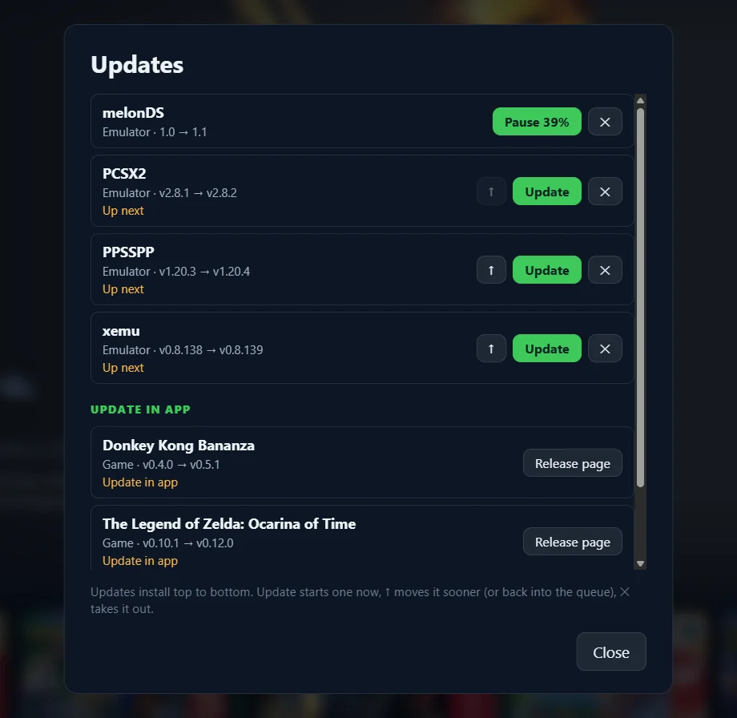
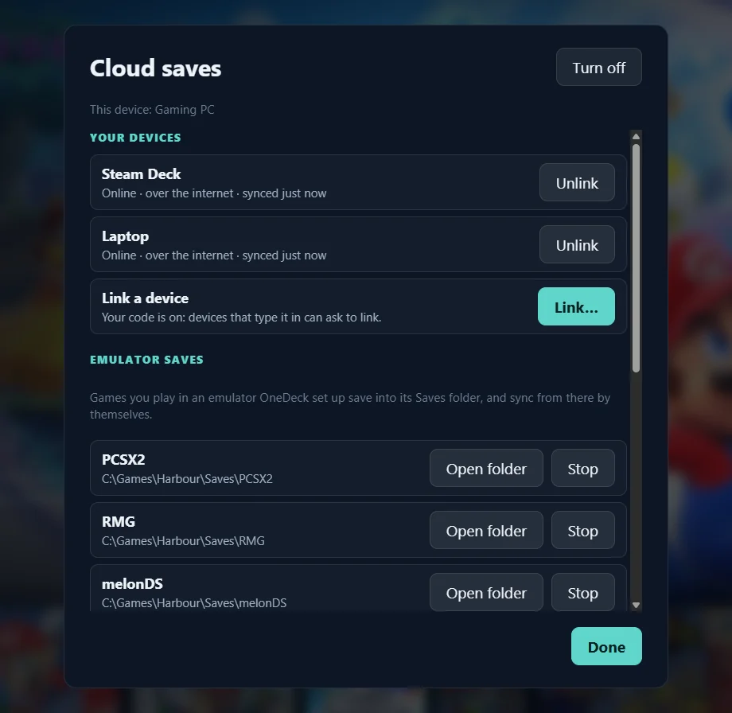

Emulators and PC Ports,
all on OneDeck.
One launcher for every ROM you own. Add your games, install emulators, or find projects that allow you to play your games, natively on PC.
Windows and Linux supported. Free and open source. No account, no tracking.


Every console, one deck
OneDeck sorts your games by console, with box art, logos and video previews fetched for you.

Emulators, set up for you
OneDeck installs the right emulator for your game and auto-applies settings for your screen. There are currently 20 emulators, from NES to Switch 2.

PC ports in one click
OneDeck searches the Recompendium for native PC ports for your games. Want to add your own? Just paste the GitHub link and OneDeck will take care of the rest. (On Linux, Windows-only ports run through Proton.)

Always up to date
Easily update your ports and emulators, all in one click.

Your saves, on every device
Link your devices with a unique code for P2P cloud saves. For more convenience, use a cloud storage service.
How to set it up
- Settings → Cloud saves → Turn on, on each device.
- Link… → Generate → Copy code to the other device, and click Allow.
- IMPORTANT: Emulator saves sync automatically. PC ports need you to point to the right save folder: add each once with ••• → Sync saves…
Devices not on at the same time? In Cloud saves, choose a OneDrive, Dropbox or Google Drive folder (its app does the rest), or sign in to Dropbox.
Made for a controller
Couch-friendly from the first screen. Hold Back + Start to quit any game.
Windows and Linux supported
That other one might come in the future.
Bring your own games
Already have a folder of ROMs? Do a bulk scan and OneDeck will do the rest.
No account, no tracking
Free and open source. Nothing about you leaves your PC.
Get OneDeck
Windows and Linux supported. Free and open source. No account, no tracking.
OneDeck stands on the work of others: every emulator is made by its own team. Cloud saves run on OpenSave.
Azahar AzaharPlus Cemu Dolphin DuckStation Eden Flycast Lichii melonDS Mesen mGBA PCSX2 PPSSPP RMG RPCS3 Ryujinx shadPS4 Snes9x xemu Xenia